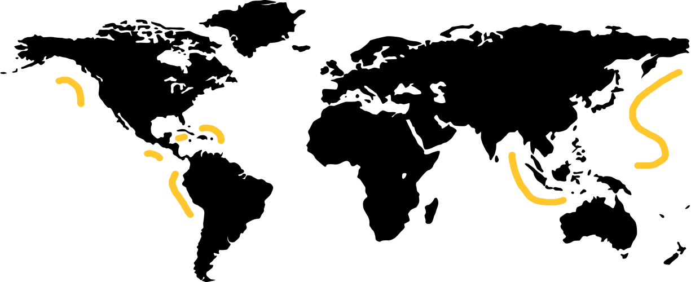
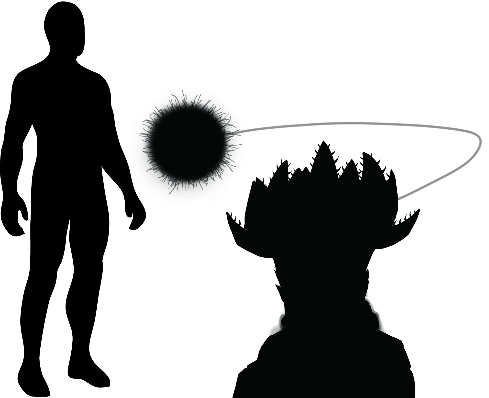
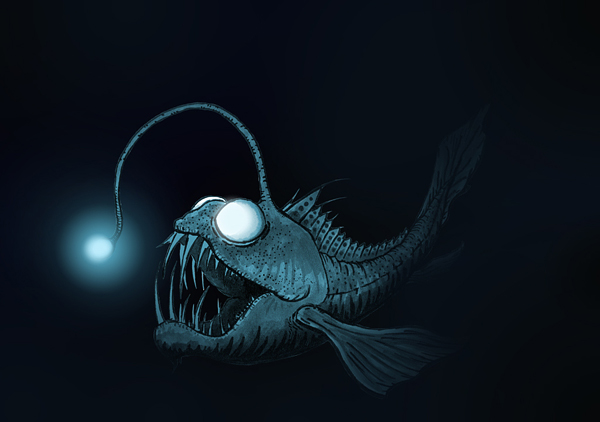
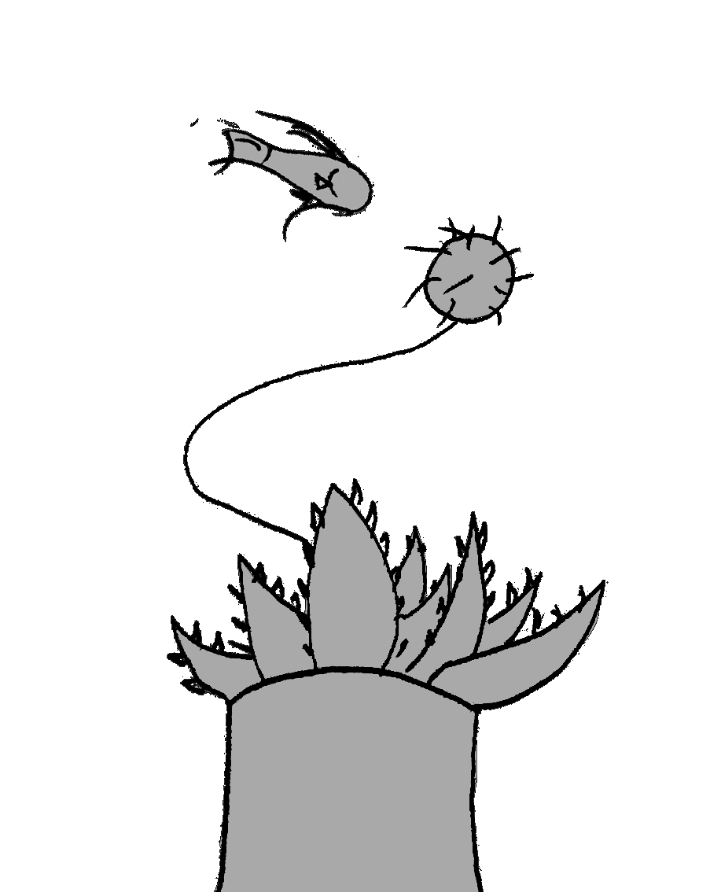
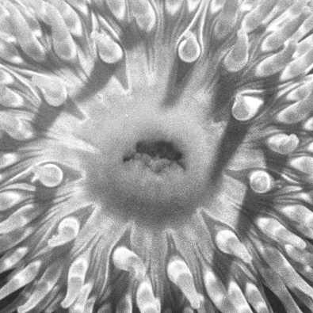
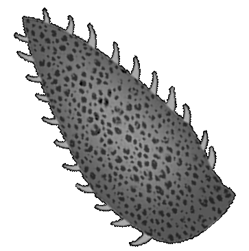
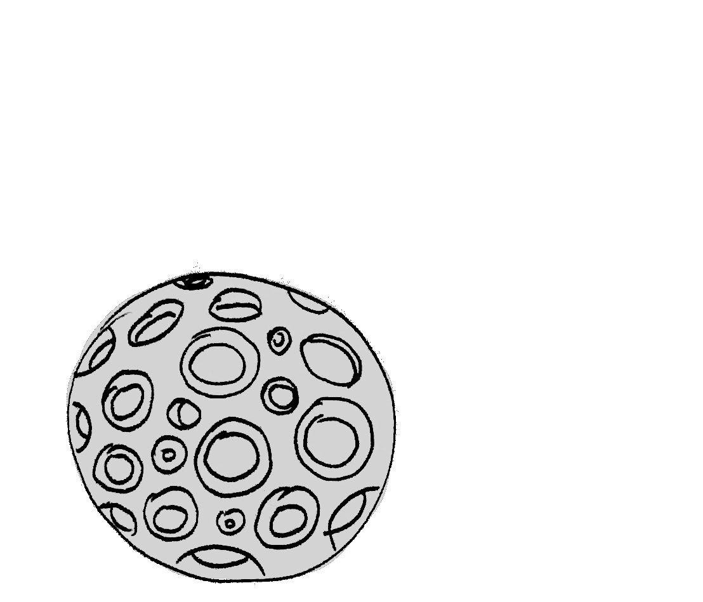

The Bone Anemone
Urticina osseus

Urticina osseus, also affectionately known as the Bone Anemone, is a marine, predatory animal of the order Actiniaria, making it closely related to sea anemone.
They can be found found in ocean trenches of depths 9km or deeper, making them very elusive.

The Esca
The Luminous Orb

The biological make up of the luminous orb is very much like the esca of the anglerfish. Its surface is coated with a lot of fine hair-like filament. Light-emitting bacteria in the esca gives it its eerie luminescent glow in the darkness of the sea. This light attracts nearby prey to its comforting light.
The esca is connected to the anemone's body with a fine but strong filament that's connected to its body. The filament can retract into its body, luring its prey into the reach of its spined leaves. *SNAP* And its prey is gone.
The Leaves
Jaws of Death

The leaf-like structure are actually modified tentacles that act as jaws that clamp on the prey it lures with its orb. Spines grow on the edges of these "leaves" which can pierce scales and dig into the flesh of its prey to ensure they do not escape. They grow in an upward spiral from the stem, breaking off as new ones form.
The Mouth
Om nom nom

Just like the sea anemone, it has a mouth with which it uses to consume and digest its prey. It's made out of circular muscles that functions similar to sphincters in the human body, able to open to let its prey into its body, and close to keep it in as it gets digested.
Unlike other anemones, it does not release its offspring through its mouth. Instead, pods at the base of its stem produce baby polyps until they are mature enough to be released to find a new place to grow.
Calcified Leaf Remnants
Spiky spiky

In the deep sea, everything is useful. Even the calcium from the bones of its prey is deposited in the lower leaves of the plant. Once the leaves are brittle, they fall right off, forming a tough shell that protects the anemone's stem.
Polyp Pods
Trypophobia Fuel

Once mature, the polyp pods release hundreds mature polyps which travel for 1-2 kilometres on the ocean currents before settling on the seabed, ready to start the cycle anew.
Basal Plate
"Roots"

The basal plate is normally a disc in sea anemones, but due to the strong undersea currents, the Bone Anemone's basal plate have evolved into root-like structures over time. These "roots" help it to adhere to the seabed with a tight grip.